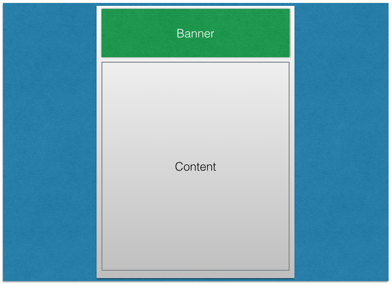
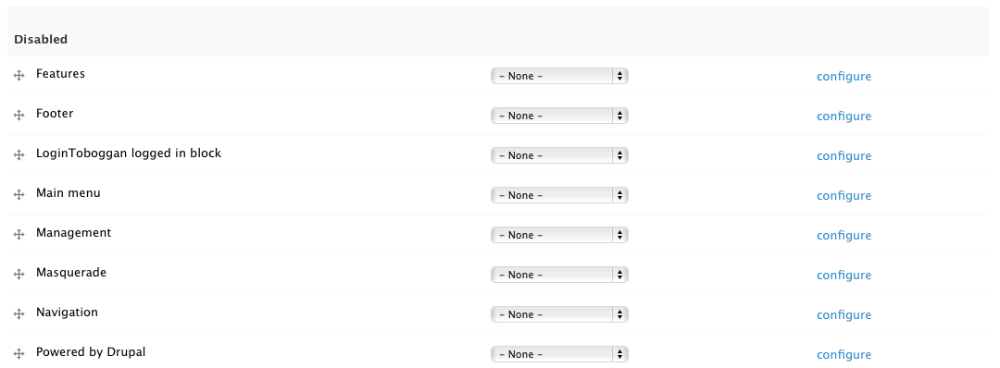
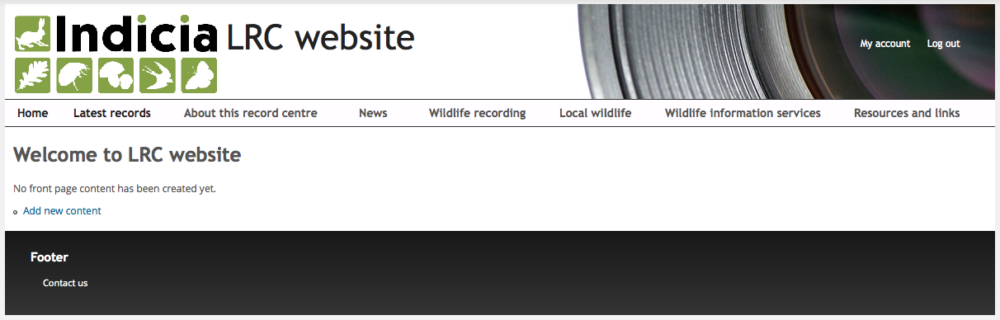
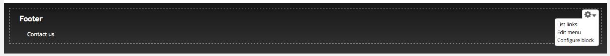
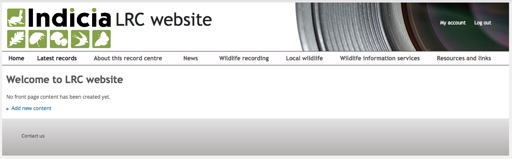

Time for some concepts...
A Drupal theme defines the structure of your pages, such as the page size, banner, column layouts etc. But, the theme has no responsibility for site functionality or content, which is why you can swap a theme on the site and the only thing that changes is the layout and appearance, not the functionality or content. Therefore the theme must also define regions, places on the page where content and functionality can do their stuff. At the most basic level, you might have a theme which defined a page with a banner and a single content region as in the following wireframe:
Of course, a real Drupal theme will be somewhat more complex, with multiple regions on the page such as left and right columns and footer areas and possible multiple layout options as our theme does. But the principle is the same.
So, what goes into a theme’s regions? That’s where blocks come in, they are quite literally the building blocks of the page which are laid out on the page by placing them into the theme’s regions. In fact, the reason why when you look at any page on your site you see the page’s content appear is because Drupal defines a core block called Main page content and by default, our theme places it in a region called Main content.
The purpose of all this was to add our footer menu to the page, so click the Structure link in the admin toolbar then select the Blocks link. This shows a page listing the regions available in your theme and the blocks active in each region. Scroll to the bottom where you will find the Disabled blocks section and within it, the Footer block:
In the Region column of the Footer block, choose Footer in the drop down then click the Save blocks button at the bottom of your page. Visit your site’s home page to check that it has worked.
Well, it’s worked, but in my opinion it doesn’t look very nice. The footer area is a bit too dominant and the “Footer” block title is unnecessary. Follow these steps to tidy things up:

Select the Configure block item in the menu. This is a shortcut to the configuration page for this block, which you could also have reached via the Structure - Blocks page.
In the Block title box, enter <none> (including the less than and greater than symbols) and click the Save block button.
Now let’s lighten up the footer colour a bit in keeping with the rest of the template. Select Appearance then click Settings for Indicia default theme. Scroll down to the Colour scheme section and change the Footer top and Footer bottom colours to 2 shades of light grey. Since the font won’t show very well now, change the Footer text to a dark colour then click Save configuration and revisit the home page to check that it has worked OK. You could of course continue to enhance the footer area by adding other blocks, or using custom CSS to centre the menu etc.
Feel free to experiment!